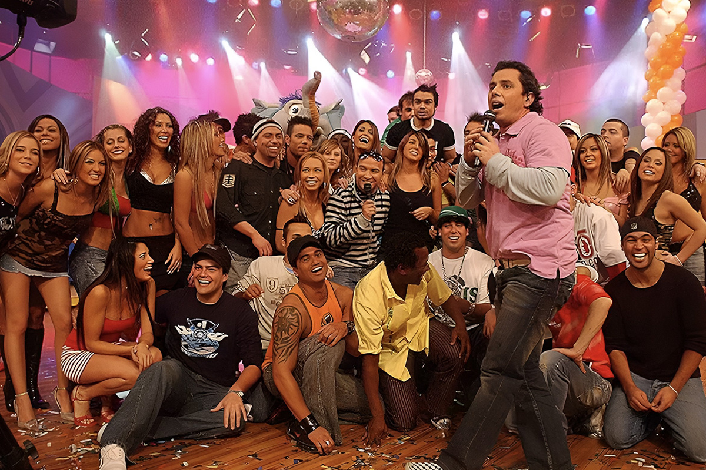
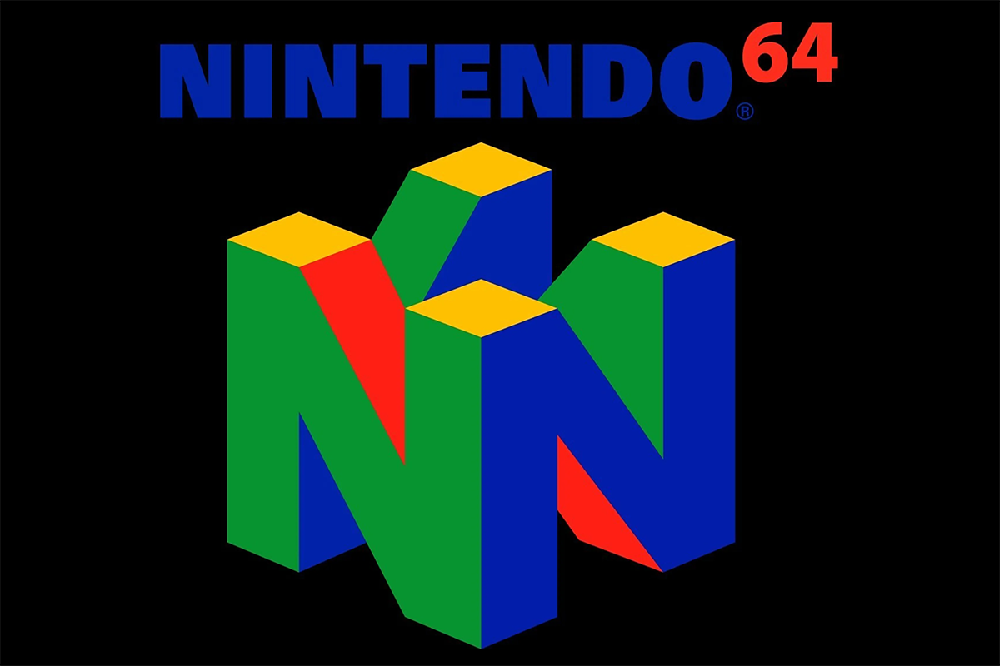
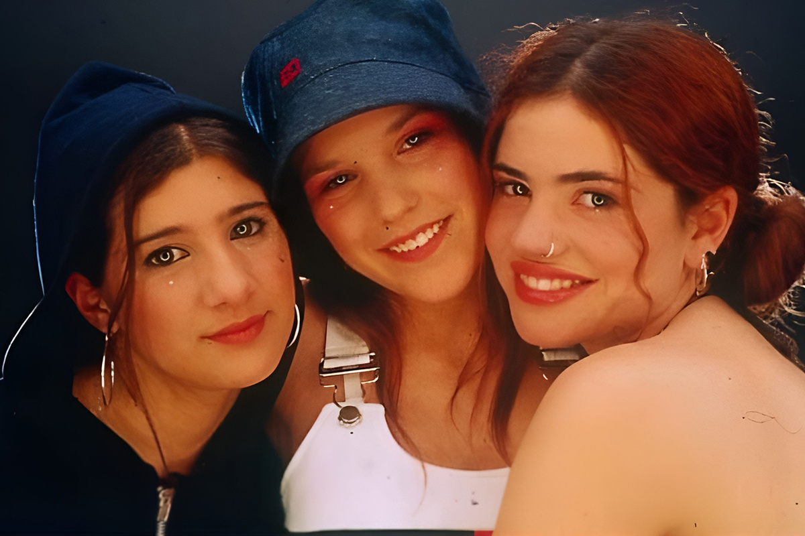

¿Acaso estamos reviviendo lo mejor de los 90 y 2000?
La nostalgia millennial llegó para quedarse
La nostalgia millennial llegó para quedarse

Las décadas de los 90 y los 2000 fueron tiempos gloriosos y de pura explosión cultural para nosotros, los millennials. Ahora, podemos ver que lo que durante esos años nos hizo vibrar, hoy vuelve con fuerza y estamos listos para este viaje de nostalgia. Aquí te contamos algunos fenómenos emblemáticos que han vuelto para conquistarnos nuevamente. ¿Un ejemplo? El revival de Mekano bajo el nombre de “El Fenómeno”.

El axé y las coreografías que aprendimos hace más de 20 años frente a la tele, siguen presentes en nuestro recuerdo y, hay que decirlo, también en fiestas de matrimonios. Sí, soy de las que disfruta bailar todas esas canciones en grupo.
Si eres de las mías, probablemente recuerdes el programa juvenil Mekano. El mismo que la rompió en los 2000 ha vuelto con un formato renovado bajo el nombre “El Fenómeno”. Eso sí, con el mismo animador, coreografías de antaño, pero con un toque de música urbana e invitados especiales. Y han sido los episodios que mantienen la misma esencia que lo hizo popular, que está logrando captar la atención del público joven y adulto. ¿Ya viste el programa donde estuvo Porto Seguro? Iconic.
Hace años que los jeans de tiro bajo, las zapatillas chunkys y cortavientos vintage “nos están respirando en la oreja, Marce” (referencia de Betty La Fea, solo para entendidos). Pero también los más importantes diseñadores del mundo han incluido tendencias de los 90 y 2000 en las pasarelas: poleras con logos de marcas icónicas, sandalias con plataforma, chaquetas oversized, jeans acampanados, lentes de aviador, entre otros. Y, por eso, la moda en este año se entrelaza con la nostalgia de manera perfecta.

Tamagotchi; mi primer hijo (virtual) y probablemente el tuyo también. De seguro que haber tenido una mascota fue la primera vez que me vicié con la tecnología… Y me di cuenta de que han vuelto gracias a los miles de videos que hoy están en TikTok. Muchos usuarios están subiendo contenido de nuestros recordados Tamagotchis y, por un lado, las nuevas generaciones han descubierto la felicidad que nosotros vivimos tantos años atrás, y por otro, nos han motivado a reencontrarnos con nuestra infancia.
Pero también están los videojuegos retro, como el Nintendo 64 y la PlayStation original, que están causando furor entre los treintañeros y las nuevas generaciones.

Hablemos del pop y el rock. Backstreet Boys, NSYNC e incluso los recordados Sclub7 ya han programado tours. Estas bandas y más artistas de la época están experimentando un revival y el recibimiento es diez de diez. Nuevamente, los éxitos de ayer suenan en las radios y podemos volver a cantar en vivo todo el soundtrack de nuestra adolescencia.
Pero no todo es internacional, porque Karen Paola, mujer icónica de Mekano, colaboró con Myriam Hernández para estrenar una nueva versión de la canción “Amiga”. Ha resonado fuertemente en redes sociales y se ha convertido en un verdadero hit nostálgico. Seamos sinceros, más de uno de nosotros ha podido cantar a todo pulmón los temazos de Supernova en alguna discoteca.
Cuando supe de la “Fiesta Grado 3” y vi el line up no lo podía creer: ¡¿A*Teens nuevamente en Chile?! Jamás lo habría imaginado luego de su show en el Festival de Viña en el año 2000.
Este festival se llevó a cabo en enero de este año en Concepción -con un fail enorme en Santiago debido a la suspensión del evento- y se encargó de reunir a grupos como A*Teens, Glup!, Supernova, Kudai y muchos más. Si tuviste la oportunidad de ir, ¡nos encantaría conocer cómo fue la experiencia!
Luego de este viaje nostálgico, de seguro le echarás un ojo a tu alrededor para identificar otra tendencia, canción o juego que está volviendo desde el pasado. Y si no, te preguntamos: ¿qué otra tendencia retro te gustaría que volviera?
 Cultura
CulturaSé que suena raro hablar de calor extremo mientras en Chile todos están buscando la parka más gruesa del clóset.
 Cultura
CulturaEl hecho de que estemos entrando al mes de julio no se puede creer. Pero lo que tampoco se puede creer es la cantidad de artistas que han…
 Cultura
CulturaCuando hablamos de trabajos clásicos de la música chilena, siempre se nombran los discos de Violeta Parra, Víctor Jara, Los Jaivas o…